Algorithmic Fairness · Session 1 · Exercises 1 and 2 · about 10 minutes
Get exact counts in CODAP’s case table with formulas, practising on compas_classroom.csv and c_charge_degree first.
How to move: right arrow key or space bar. Esc shows all pages.
compas_classroom.csv open in CODAP, as in the warm-up. (compas_classroom.csv on GitHub; CODAP)race_group (Partner A, COMPAS) or sex (Partner B, Adult).For Exercise 1. Five steps, then two short tips.
Drag the c_charge_degree column heading to the left edge of the case table.
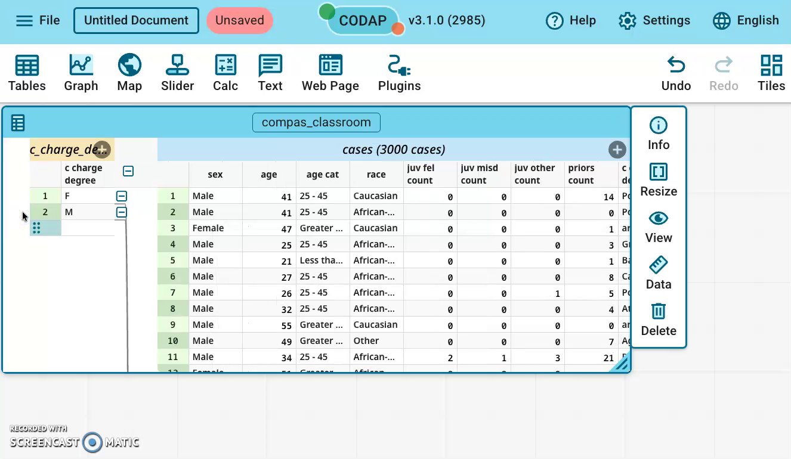
You should see: the table splits: one row per group on the left (F and M), the people on the right.
In the left part, click + to add a column, type n as its name, and press Enter.
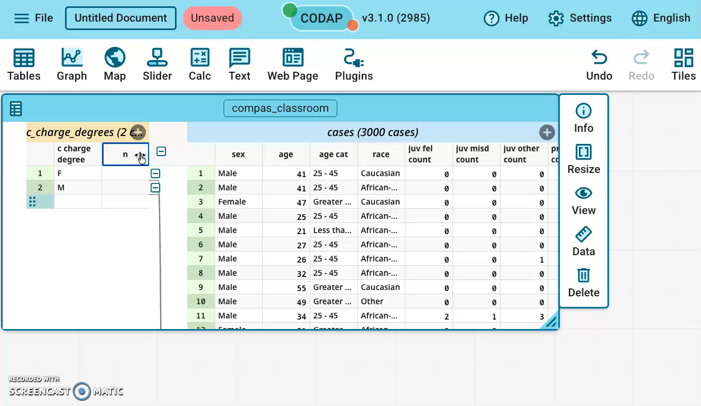
You should see: a new, empty column named n in the left part.
Click the n heading → Edit Formula…, type this formula, then click Apply:
count()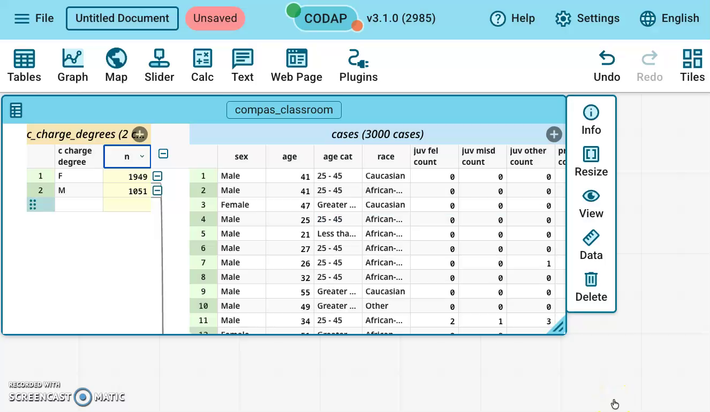
You should see: F 1949, M 1051.
In the left part, add a column named positives with this formula:
count(label, label=1)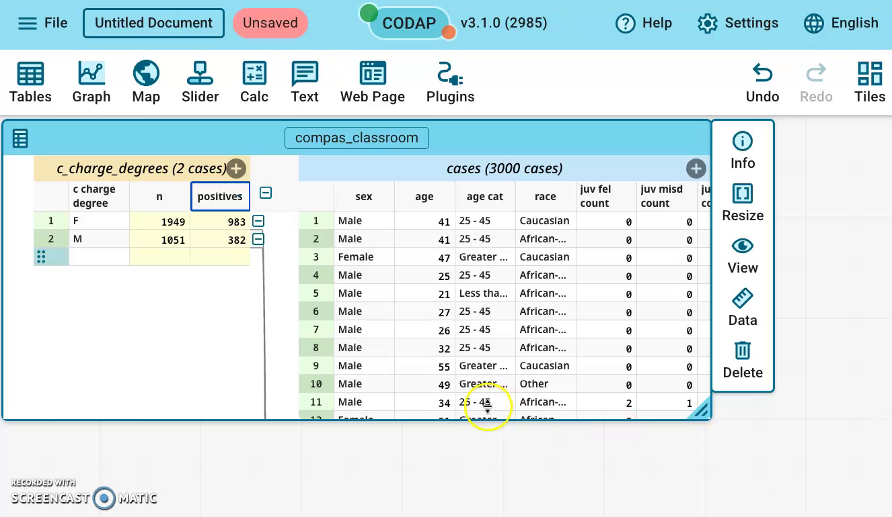
You should see: F 983, M 382.
In the left part, add a column named base_rate with this formula. It uses the two columns you just made:
positives / nThe base rate is the share of the group with label = 1, so it is positives divided by n.
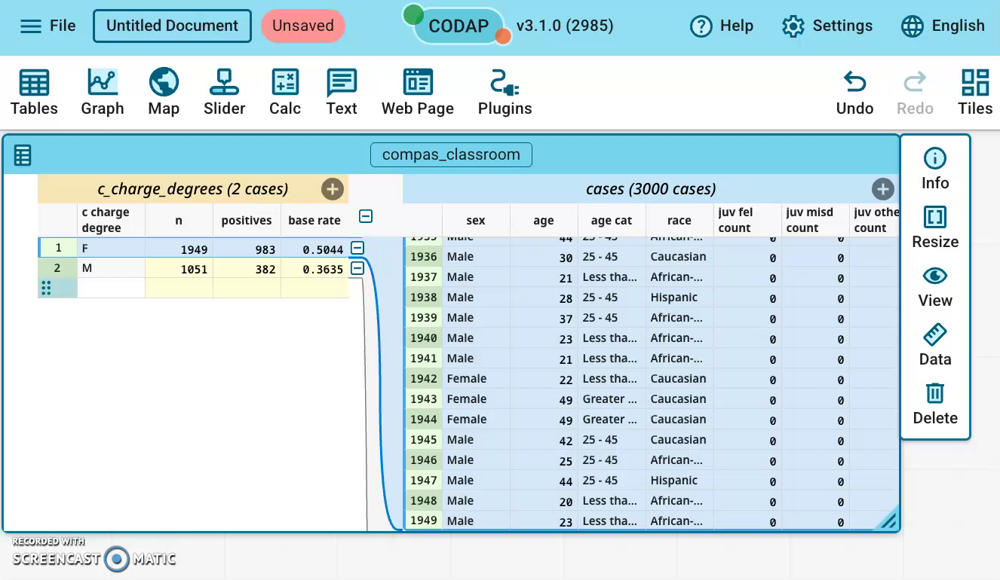
You should see: F 0.504, M 0.363 (0.5044 and 0.3635 with 4 decimals, as in the picture).
Add n, positives and base_rate in the LEFT (group) part.
In the right part, count() counts the whole file and shows 3000 on every row.
If you see 3000 on every row, delete that column and add it again in the left part.
CODAP may show base_rate as 0.5 and 0.36.
Click the base_rate heading → Edit Attribute Properties… → set Precision to 4.
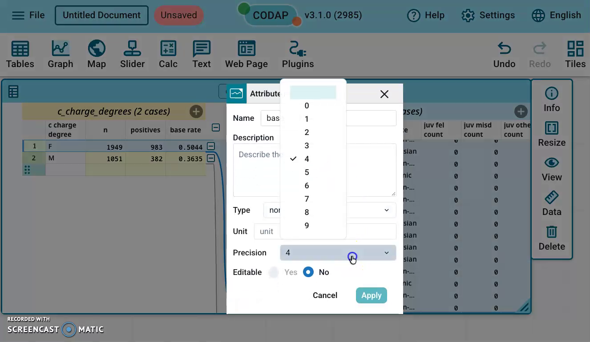
You should see: 0.5044 and 0.3635.
You now have n, positives and base_rate for each group: the numbers you need for Exercise 1.
Keep the table grouped: Part B starts from it.
Optional: watch all the Part A steps in one silent video (about 2 min). Everything in the video is in the steps above.
For Exercise 2. Keep the table grouped from Part A; you will undo the grouping at the very end.
We use only test rows: rows the model never learned from.
Scroll the people’s part (blue bar “cases (3000 cases)”) to the far right, then click the + at the end of that bar.
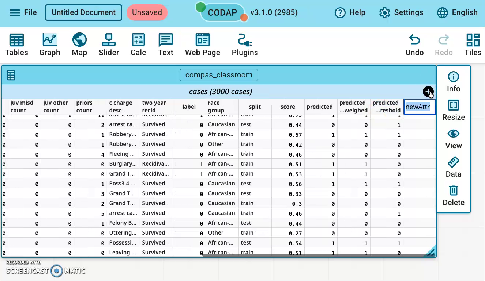
You should see: a new column called newAttr at the right end.
Add this column with the + on the blue “cases (3000 cases)” bar.
If you use the + on the yellow group bar on the left (“c_charge_degrees (2 cases)”), the formula shows “invalid…” on every group row.
Fix: delete that column and add it again from the blue bar.
Type cell as the new column’s name and press Enter. You choose this name.
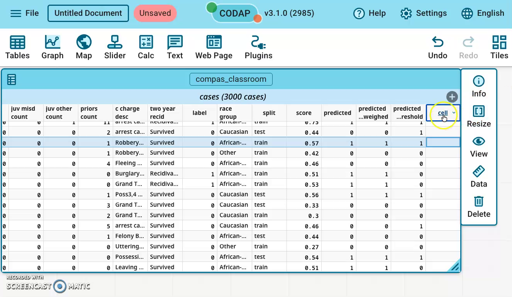
You should see: the column is now called cell, still empty.
Click the cell heading → Edit Formula…, type this formula, then click Apply:
split + label + predicted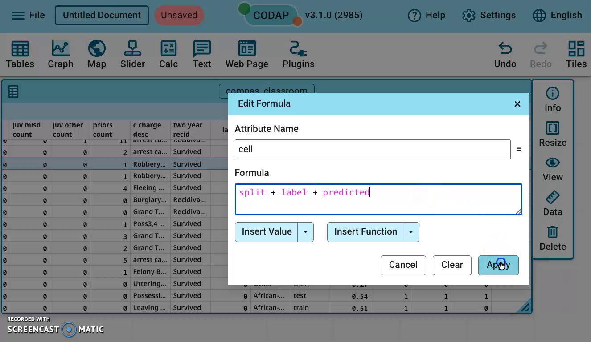
You should see: the formula in the Edit Formula window, ready to apply.
Look at the cell column: each row’s code joins its split, label and predicted values.
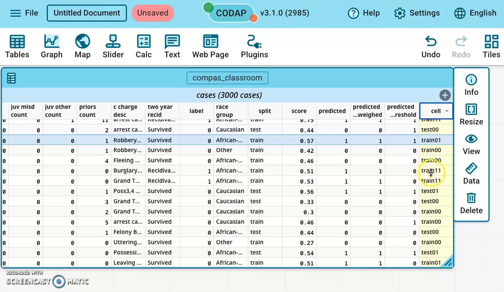
You should see: codes such as test11, test01, train00. A test row with label 1 and predicted 1 shows test11.
| Code | Actual (label) | Predicted | Cell of the matrix |
|---|---|---|---|
| test11 | 1 | 1 | TP |
| test10 | 1 | 0 | FN |
| test01 | 0 | 1 | FP |
| test00 | 0 | 0 | TN |
Read a code as: which rows, then Actual, then Predicted. Training rows start with train.
We count only the test codes, because the model never saw those rows.
Training codes are there too, but counting them would make the model look better than it is.
Scroll back left, click the + on the yellow group title bar (“c_charge_degrees (2 cases)”), type TP, and press Enter.
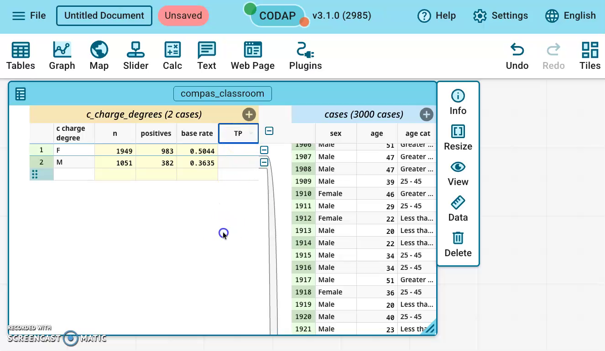
You should see: a new, empty TP column next to n, positives and base_rate.
Click the TP heading → Edit Formula…, type this formula, then click Apply:
count(cell, cell="test11")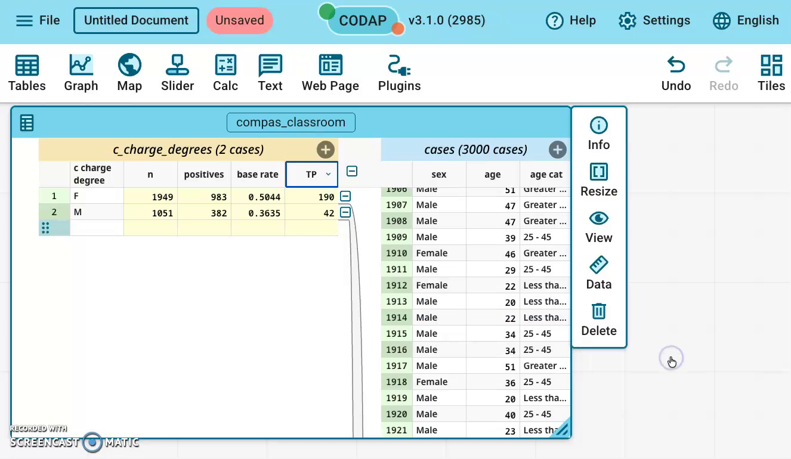
You should see: F 190, M 42. Same pattern as positives: count the rows where a column equals a value.
Add a column FN in the left part with this formula:
count(cell, cell="test10")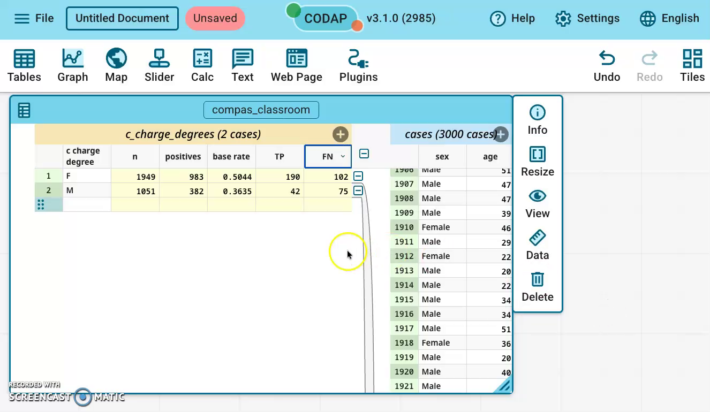
You should see: F 102, M 75.
Add a column FP in the left part with this formula:
count(cell, cell="test01")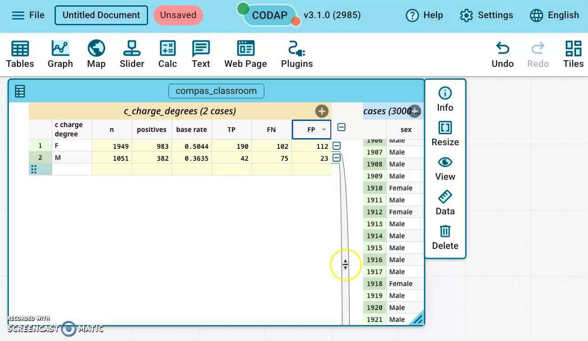
You should see: F 112, M 23.
Add a column TN in the left part with this formula:
count(cell, cell="test00")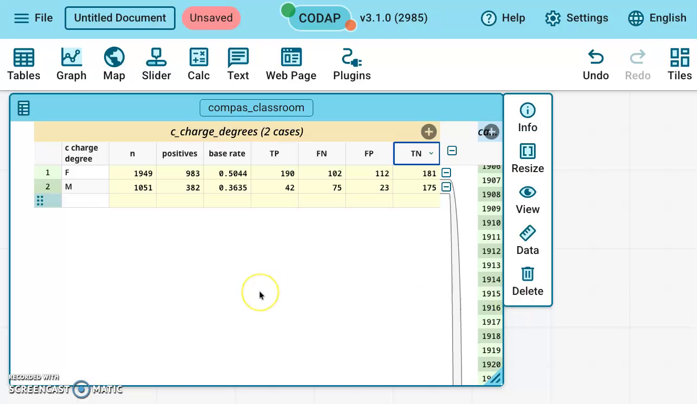
You should see: F 181, M 175.
| c_charge_degree | TP | FN | FP | TN | Test rows |
|---|---|---|---|---|---|
| F (felony) | 190 | 102 | 112 | 181 | 585 |
| M (misdemeanor) | 42 | 75 | 23 | 175 | 315 |
Check: TP + FN + FP + TN equals the group’s number of test rows.
Record your numbers first. Then drag the c_charge_degree column heading back into the right part of the table.
You should see: one table again, one row per person.
Do Parts A and B again on your own file, with your group column instead of c_charge_degree:
race_group: African-American and Caucasian (ignore the Other row). Test rows: 463 and 307.sex: Female and Male. Test rows: 200 and 400.Optional: watch all the Part B steps in one silent video (about 3.5 min). Everything in the video is in the steps above.